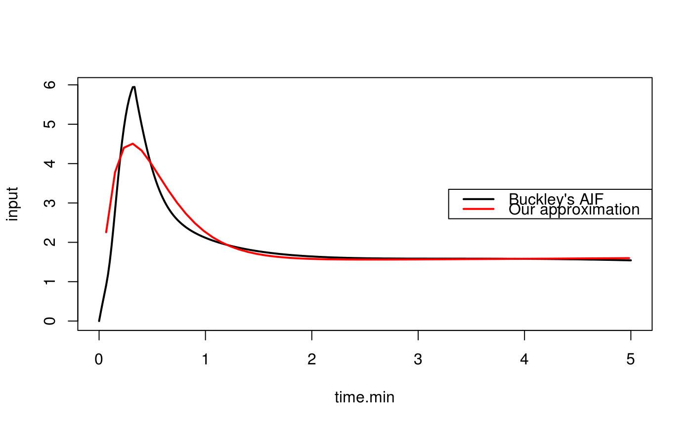

aif-models.RdParametric models for arterial input functions (AIFs) that are compatible with single compartment models for dynamic contrast-enhanced MRI (DCE-MRI).
aif.orton.exp(tt, AB, muB, AG, muG)
orton.exp.lm(
tt,
aif,
guess = c(log(100), log(10), log(1), log(0.1)),
nprint = 0
)
model.orton.exp(tt, aparams, kparams)| tt | is a vector of acquisition times (in minutes) relative to injection of the contrast agent. Negative values should be used prior to the injection. |
|---|---|
| AB, muB, AG, muG | are parameters of the double exponential function that describe the AIF. |
| aif | is the vector of observed contrast agent concentrations (data) used to estimate the parametric model. |
| guess | Initial parameter values for the nonlinear optimization. |
| nprint | is an integer, that enables controlled printing of iterates if
it is positive. In this case, estimates of |
| aparams | is the vector of parameters (\(A_B\), \(\mu_B\), \(A_G\), \(\mu_G\)) associated with the AIF. |
| kparams | is the vector of parameters (\(v_p\), \(K^{trans}\), \(k_{ep}\)) associated with the “extended Kety model” for contrast agent concentration. |
aif.orton.exp and model.orton.exp return the AIF
associated with the pre-specified parameter values.
orton.exp.lm returns a list structure with
The amplitude of the first exponential function.
The decay rate of the first exponential function.
The amplitude of the second exponential function.
The decay rate of the second exponential function.
The success (or failure) code from the Levenburg-Marquardt
algorithm nls.lm.
The text message associated with
the info paramters.
aif.orton.exp displays the exponential AIF from Orton et al.
(2008) for a known set of AIF parameter values. model.orton.exp
displays the exponential AIF from Orton et al. (2008) for a known set
of AIF and compartmental model parameter values. orton.exp.lm
estimates the AIF parameters, using nonlinear optimization, using a vector
of observed contrast agent concentrations.
Orton, M.R., Collins, D.J., Walker-Samuel, S., d'Arcy, J.A., Hawkes, D.J., Atkinson, D. and Leach, M.O. (2007) Bayesian estimation of pharmacokinetic parameters for DCE-MRI with a robust treatment of enhancement onset time, Physics in Medicine and Biology 52, 2393-2408.
Orton, M.R., d'Arcy, J.A., Walker-Samuel, S., Hawkes, D.J., Atkinson, D., Collins, D.J. and Leach, M.O. (2008) Computationally efficient vascular input function models for quantitative kinetic modelling using DCE-MRI, Physics in Medicine and Biology 53, 1225-1239.
Brandon Whitcher bwhitcher@gmail.com
data("buckley")
## Generate AIF params using the orton.exp function from Buckley's AIF
xi <- seq(5, 300, by=5)
time <- buckley$time.min[xi]
aif <- buckley$input[xi]
aifparams <- orton.exp.lm(time, aif)
aifparams$D <- 1
unlist(aifparams[1:4])
#> AB muB AG muG
#> 37.14845965 3.89506197 1.51615822 -0.01066004
aoe <- aif.orton.exp(time, aifparams$AB, aifparams$muB, aifparams$AG,
aifparams$muG)
with(buckley, plot(time.min, input, type="l", lwd=2))
lines(time, aoe, lwd=2, col=2)
legend("right", c("Buckley's AIF", "Our approximation"), lty=1,
lwd=2, col=1:2)

cbind(time, aif, aoe)[1:10,]
#> time aif aoe
#> [1,] 0.06666667 0.9126331 2.258002
#> [2,] 0.15000000 2.8075149 3.779942
#> [3,] 0.23333333 4.9157838 4.402032
#> [4,] 0.31666667 5.9422838 4.506284
#> [5,] 0.40000000 4.9813873 4.332074
#> [6,] 0.48333333 4.0168210 4.025862
#> [7,] 0.56666667 3.3262760 3.674312
#> [8,] 0.65000000 2.8732966 3.326186
#> [9,] 0.73333333 2.5805205 3.006701
#> [10,] 0.81666667 2.3837840 2.726828